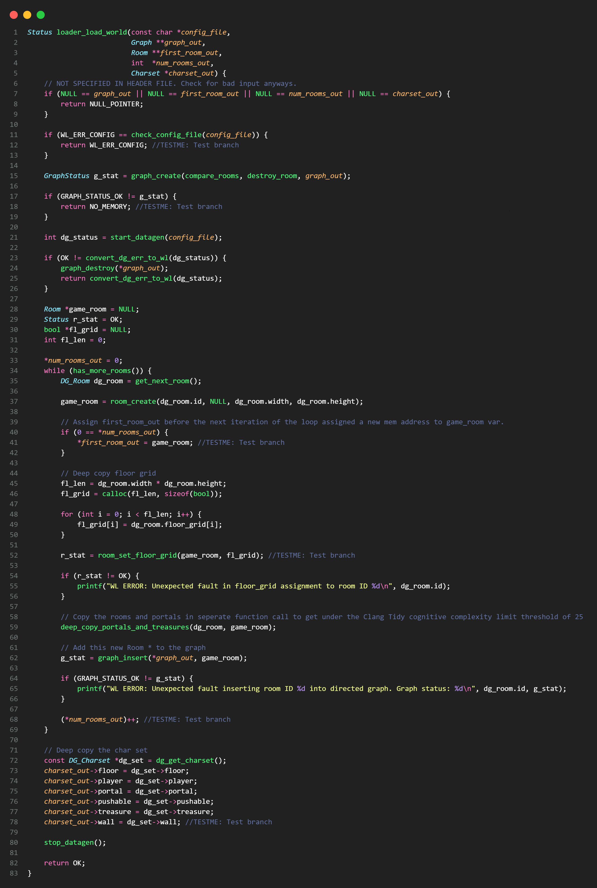
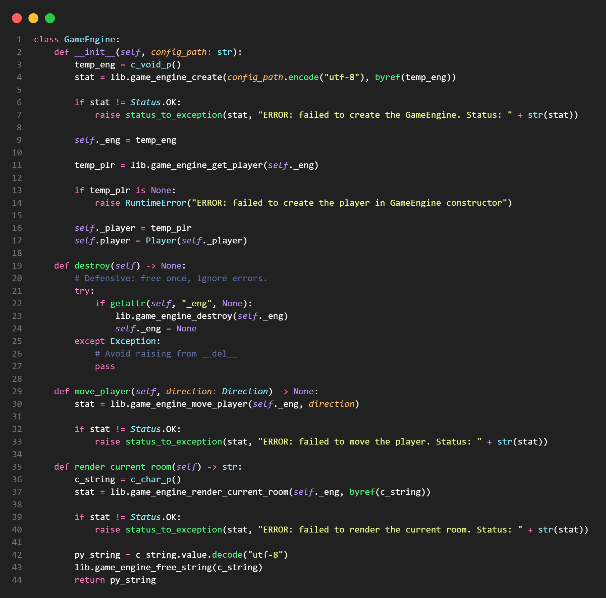

The first part of developing Julia's Jubilant Journey was creating the back end in C. Most of the development was done cross platform on both my windows PC
and my Linux Mint laptop. Thus, a Docker container was used to provide a smooth dev environment. I made heavy use of Makefile to take care of building, running
and testing through gcc and the Check library for unit testing. Much of the .h header files in c/include/ were a specification that
my source code needed to comply with. All of the details of the implementation were for me to design and decide. When I found the spec to be deficient
or where it contained errors I created alternative functions or wrappers in my own user defined headers.
One of the many key function of the C backend is to interface with the data generator from the libpuzzlegen.so shared object
library. This process needs to perform a deep copy on the data provided by the generator since it is only stored in the heap for the life time of the generator
this the World Loader within Julia's Jubilant Journey must copy each field in each struct in order to retain valid pointers to memory. There is much
more to see on GitHub with the early state of the C backend.


The second part was all about building a python wrapper of the C backend library. Using ctypes the argument types
and result types were defined. Then classes were defined in Python with methods that would call the backend C functions with lots of error
handling. A new A2 git repo was set up for this second part. The initial commit of the A2 repo was copying the state of the repo from part one.
This also meant that development stopped on the A1 repo at this time which makes it a perfect snapshot of the start of part 2.
It was important that the top level classes and methods were a pythonic as possible. The goal was that if the user only opens
run_integration.py in A2 or the future python files run_game.py and game_ui.py from A3 that
they would have no idea 77% of the source code for the game was written in C.